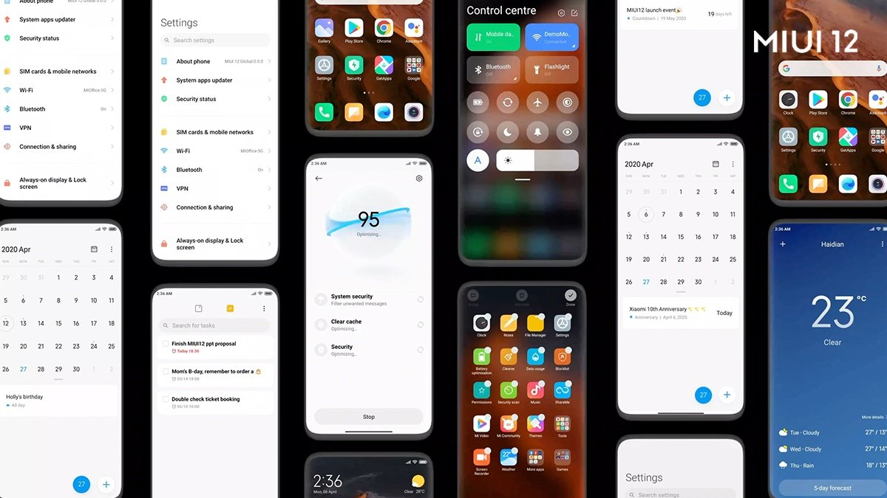

¿Qué es MIUI?
MIUI es una capa de personalización para teléfonos inteligentes basada en Android desarrollada por Xiaomi. Se destaca porque tiene una versión global y una versión china, la cual se caracteriza por no tener idioma multilenguaje cosa que la primera sí tiene. Ambas versiones están basadas en Android. La interfaz fue rediseñada, se rediseñaron iconos, se incluyeron aplicación y funciones que no contaban los anteriores MIUI, por primera vez, agregaron su primer lema “MIUI Visualmente impresionando, increíblemente simple”.
Imágenes de MIUI
Aquí tienes una imagen de MIUI:
Rendimiento y personalización
MIUI incluye una serie de optimizaciones de rendimiento para mejorar la velocidad y capacidad de respuesta del sistema basada en una opción que está activada por defecto en la mayoría de teléfono de Xiaomi llamada “Optimización de MIUI”. También incluye una variedad de opciones de personalización, como temas, fondos de pantalla y paquetes de iconos, para permitir a los usuarios personalizar su dispositivo a su gusto.
Colores
Los colores que más destacan de MIUI son: Blanco, rosa, azul, amarillo (pastel) y lila.